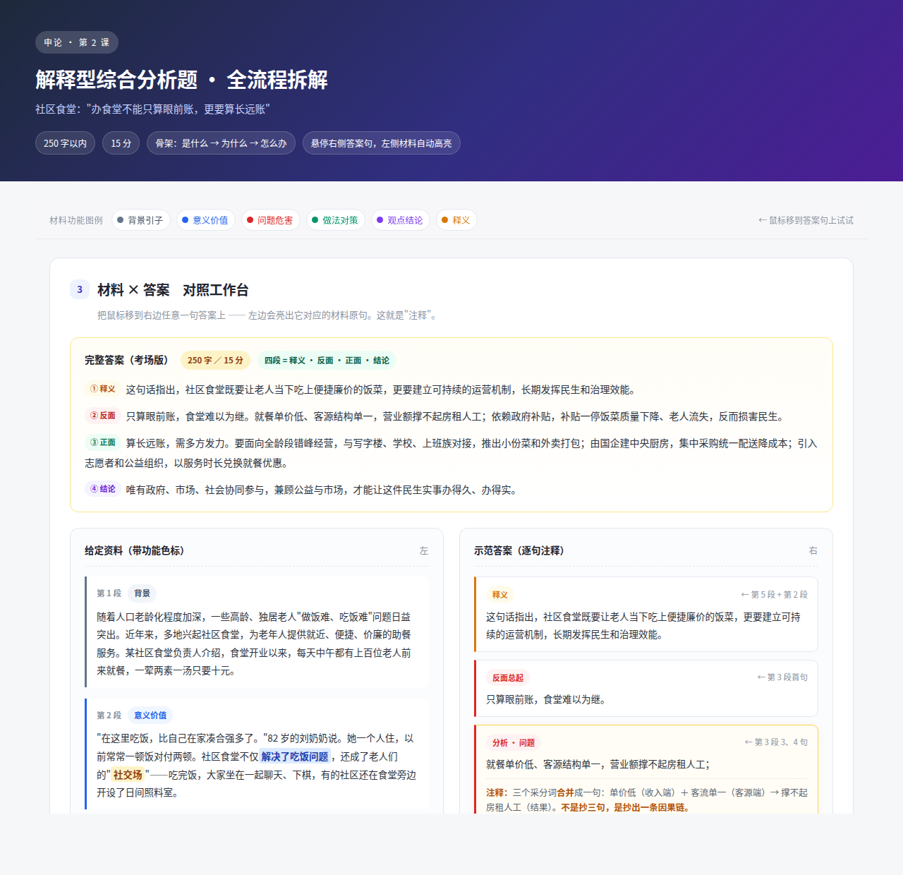
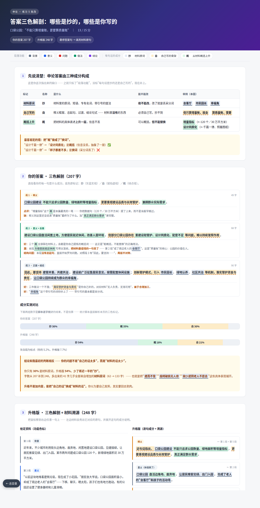
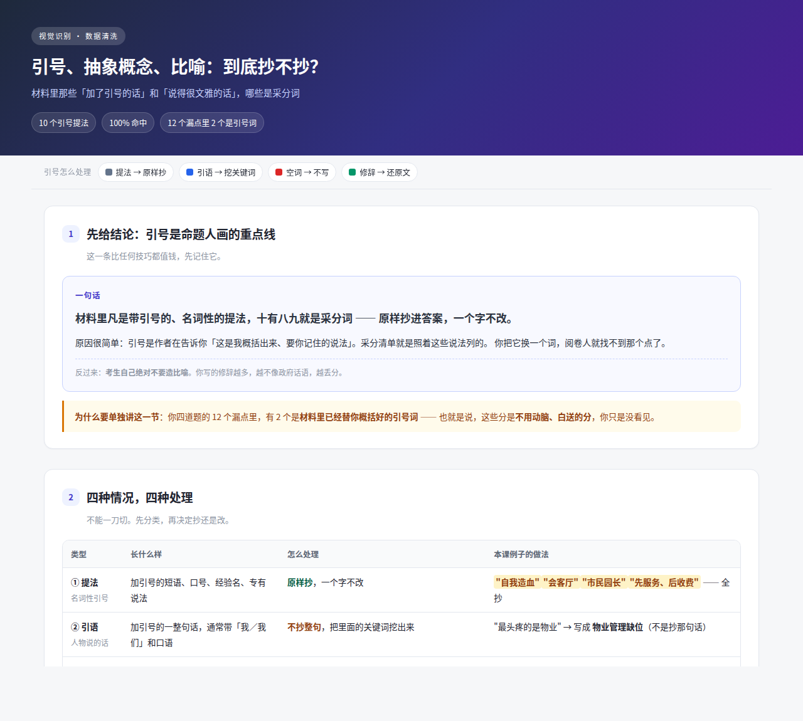

要点抄材料，骨架自己搭 · 一句一勾 · 字数实测 · 正反两层对称

解释型综合分析题 · 悬停答案句自动高亮材料原句

哪些是抄的、哪些是自己写的 · 成分实测 · 13 个采分点逐点对照
三条真相 · 12 周路线图 · 方法速查 · 进度与成绩
四道练习的存档：诊断结论 · 漏点出处 · 考场版参考答案
成长曲线 ·「抄」的占比变化 · 五份解析索引 · 复现的毛病
老旧小区困难 · 4.5/15：三色解剖 + 8 个采分点逐点对照
三市做法 · 7/10：三色解剖 + 7 个采分点逐点对照
乡村民宿问题 · 11/15：三色解剖 + 13 个采分点逐点对照

10 个引号提法 100% 是采分词 · 提法／引语／空词／修辞四种处理
四把钥匙 · 标点切分法 · 字数报警器 · 答题格式规范
归纳概括 · 综合分析 · 提出对策 · 贯彻执行 · 大作文
政府话语词汇表 · 对策动词库 · 句式模板 · 大作文框架
每天 15 分钟积累法 · 一篇文章一张卡
评分档次 · 批改五块模板 · 常见失分诊断表
每道题解析必须做满的九步 · 三条质量红线